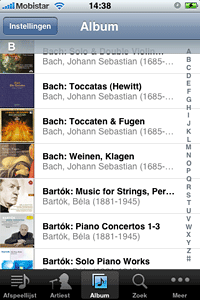
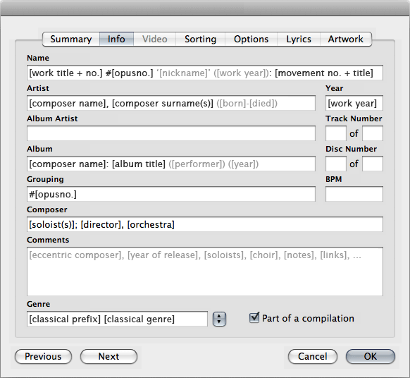
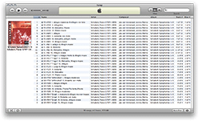
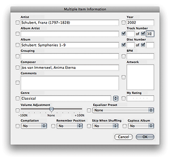
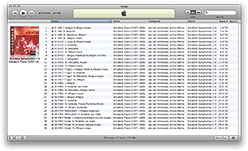
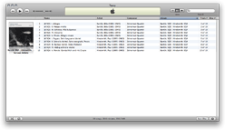
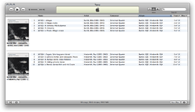
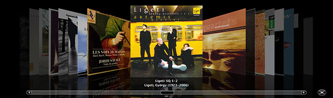
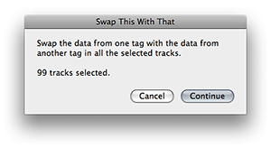

Tagging Classical Music with iTunes
zondag 10 augustus 2008
Organizing classical music in iTunes (or any other player) is tricky. This article describes a system for adding or changing information to your collection (ie. tagging) in order to:
- make it more accessible in iTunes and on the iPod/iPhone
- blend it seamlessly with other genres
- make it work with online communities like Last.fm
The following is by no means intended as a proof of concept for a standardised way of tagging classical music. Many people have tried this, and failed. I merely experienced an irresistible urge to communicate my personal solution to the world because I was so happy with it. If you have been fretting over your own collection and recognize some of the problems described below, I hope that this article will sprout some ideas that can help you out.
1. iTunes versus folders
I have been organizing my ever growing music collection over the last 10 years using the good old ‘file and folder’ method (folders for every genre with sub folders for albums). This worked fine for me on Windows: I just had to drag an album on Winamp to play it. Later, on my first Mac, I mindlessly continued this method using iTunes instead. But that’s where it ended. I never adopted the habit of adding my music to iTunes and forgetting about the actual files and folders on the hard drive. Every now and then, I even completely emptied my library to get rid of the accumulating clutter; I just didn’t care for the library thing. Nothing could beat the logic and speed of my drag ‘n drop hierarchical file system (even while it lived on a shared network drive).

Things change. I recently got an iPhone 3G. One of the eye catchers on the simultaneously launched App Store is an application called ‘Remote’ (from Apple, incidentally) to wirelessly control iTunes over your wifi network. It is absolutely brilliant. Unfortunately, I had one little problem: I had no iTunes library to control or browse!After some serious thinking, I decided to abandon my old folder system and use iTunes the proper way. I knew I had been postponing it far too long anyway. But this also meant there was going to be some serious (re)tagging, especially in my classical albums (over 13 days of music on more than 200 albums).
Why you should manage your music in iTunes:
- access and share your library through a wide range of devices and services: applications like iPhone Remote, other iTunes clients on the network, game consoles, http-streaming, wifi-hifi devices, cataloguing software, etc.
- rediscover albums you have been ignoring for years on your hard drive and at the same time cut away the slack that has been piling up as well
- create (smart) playlists, consult most played albums, etc.
- plethora of ways to rearrange your collection in contrast to my one-way-no-return file-folder structure (yet, paradoxically, this was the hardest thing for me to let go off)
- coverflow is really cool
2. Why tagging classical music is hard
The infrastructure for digital music (software, iPods, tagging, searching, browsing, etc.) is largely based on the Artist-Song-Album (ASA) concept. This works fine for (pop) music in general, but also for jazz and many other genres.
Classical music (whether it be old or contemporary) requires a different approach. A typical announcement on the radio sounds like this: “You’ve been listening to the final and fifth movement ‘Allegro appassionato’ from string quartet no. 15 in A minor, opus 132 by Dimitri Shostakovich, performed by the Emerson Quartet on their latest album on Deutsche Grammophon”. There you have, in order of appearance, the movement, the work, the composer, the performer and the album. So long, ASA! And it can get far more complicated. I’m not even talking about piano orchestras or operas with their individual soloists, directors, orchestras and choirs, all shouting for attention.
Since classical music lovers are condemned to work with tools designed for ‘ASA music’, their tagging has been (and is) extremely erratic and inconsistent. Just look at the tags you ‘magically’ receive from the CDDB database when you pop in a classical CD in iTunes: horror! Left unattended, your music library will grow beyond your control. You need a consistent tagging system.
I’ll start with the bad news: there is no standard way for tagging classical music and there never will be. In fact, defining such a standard is quite impossible. A solution that would work perfectly for one person, will fail miserably for the other, depending on the nature of the classical music collection. The good news is that everybody can get satisfying results with at least some tagging rules and a few tips and tricks. Here’s how I did it.
3. Tagging syntax
iTunes allows you to edit tags of only one song or of many songs at once, even if they are from different albums. Select a song and press Cmd-i (Ctrl-i on Windows) to display the Item Information dialog window. Do the same for multiple songs to bring up the Multiple Item Information window.


The screenshot below shows the tagging rules I use for my Library. The different tag fields contain some elements in grey which are either optional or exceptional, but try entering as much information as possible for the black elements.

ARTIST
[composer name], [composer surname(s)] ([born]-[died])
- Händel, Georg Friedrich (1685-1759)
- Kurtág, György (1926)
For classical music you should put the composer in the ARTIST field and the actual artist(s), performing the work, in the COMPOSER field. Read it again: this is the most important tip in this article!
Admittedly this looks and feels wrong, but eventually you will have to face the facts. It makes sense to see Beethoven, Bartók, Tom Waits, Tool and Mozart together. When you are browsing your iPod for a Beethoven symphony, you probably won’t search for the conductor or the orchestra that performs it. Users of services like Last.fm will also be pleased that the name of the composer now shows up in playlists.
Put the name of the composer first, followed by a comma and any surname(s) for sorting reasons. Look up the composer on Wikipedia and copy any strange characters that might occur in the name. You’ll never have to type them again afterwards (because iTunes remembers them), so you better get it right from start. I also make a habit of adding dates to composers, hoping that eventually some dates will stick in my brain in order to place composers better in time. Allow your library to teach you something!
If you already have a large collection of classical music and would like to switch the ARTIST with the COMPOSER field, check out the automation scripts further down this article. There’s one script that can do (or undo) all the work for you with two mouse clicks.
COMPOSER
[soloist(s)]; [director], [orchestra]
- Emerson Quartet
- Herbert von Karajan, Wiener Symphony Orchestra
- Pieter Wispelwey; Claudio Abbado, Berliner Philharmonicer
Since the composers have taken over the ARTIST field, the actual performers or artists have to move to the COMPOSER field.
There are few classical albums with only one person or one group being ‘the performer’ or ‘the artist’: there is a conductor, an orchestra etc. As I mentioned before, all the names and people will have to be crammed together in one string of text. Best is to place them in a fixed sequence, eg. starting with a solo performer (piano, singer, …) and, followed by a semicolon, the conductor and the orchestra.
Consulting the composer list on the iPod will now show a list of performers instead of composers. In pop music and jazz, the composer field is mostly empty, so there will be very little interference with those genres. Odds are you won’t be using the composer list very often, unless you’re searching for the name of a solo performer (hence its frontmost position in the tag).
(SONG) NAME
[work title + no.] #[opusno.] ‘[nickname]’ ([work year]): [movement no. + title]
- Kunst der Fuge #1080: XIII. Contrapunctus 11
- Keyboard Suite 2 #427: I. Adagio
- Sonata #247
- SQ12 #127: IV. Finale
- S3 #55 ‘Eroica’: I. Allegro Con Brio
The (SONG) NAME is displayed prominently (or even exclusively) not only when something is playing on your iPod or in iTunes, but also on Last.fm.
Unfortunately classical music composers never made a habit of giving their musical offspring fancy names. They were lucky if one of their (dryly) numbered symphonies got a nickname (like Beethoven’s third Eroica symphony, meaning ‘heroic’). Even worse, the different parts or movements of a work were simply called after their style or structure. I think about every composer has some movement called Allegro or Prelude. It bears little meaning.
Since the name of a classical work (eg. Symphony 3) has the same informative value as the song name in other genres, you should include the work title, number (and opus number) in the NAME tag in addition to the name of the movement (Allegro). Compare these NAME-ARTIST combinations: God’s away on business by Tom Waits and Symphony 4: II. Adagio by Beethoven. Makes sense, doesn’t it? Your Last.fm results will make a lot more sense too.
If a work has a nickname (like Eroica) or if I care much for the year it was written in, I include that information as well. It takes up a lot of space, but it doesn’t occur very often. The actual ‘song’ name (ie. the name of the movement) is separated by a colon or a hyphen. If the movement has a particular number, I use Roman numerals to indicate this.
Keep in mind that names can get quite long (eg. Fifteen Hungarian Peasant Songs #71: 4. Four Old Sorrowful Songs, Andante). This is particularly a problem while browsing or playing songs on an iPod or using software like Remote on the iPhone, because long names are truncated to fit the tiny displays. Keep information regarding the ‘work’ part as small as possible, just enough to still be able to view the first characters of the ‘movement’ part. You might use some of these tips:
- Using abbreviations sparingly, you can trim down a lot of charcacters. I own many string quartets by many different composers (about a third of my collection). Since this work genre is so omnipresent in my library, I simply use ‘SQ’ instead of String Quartet. There’s also ‘S’ for Symphony, but that’s about it.
- I have cut away information about tonality. Yes, that’s right: no more A major or F-Sharp Minor. Gone, everywhere! (I won’t feel offended if you stop reading here.) I decided to do this because I simply do not understand tonality. A major means as much to me as a methoxymethylenetriphenylphosphine (yes, that’s a word). Why then should I leave tonality information taking up valuable real estate in my song names?
- Even more characters can be saved by compressing the opus number indication. There’s BVW for Bach, K for Scarlati, Sz. for Bartók, Hob. for Händel, opus for Beethoven and many more. I just use the #-symbol directly followed by the number (eg. #1018) without a space (that’s a character too!).
- String Quartet 2 in G major, Op. 18/2: I. Allegro
- SQ2 #18/2: I. Allegro
ALBUM
[composer name]: [album title] ([performer]) ([year])
- Rossini: Ouvertures
- Beethoven: Sonatas, Variations for Cello & Piano
- Beethoven: Symphony 3 & 5
- Shostakovich: SQ 1-15 (Danel)
- Shostakovich: SQ 1-15 (Emerson)
- Vivaldi: Gloria | Bach: Magnificat
- Baroque Love Songs (Bartoli)
I have always liked CDs. Not only for the actual music, but also for their physical qualities. I like their colours, the booklet and the way their collected backs are always visible from where I’m working in the living room. However, once I copy them to iTunes (using Apple lossless, or every now and then as AAC 320 kbps) I hardly ever touch them again.
Nonetheless, I want iTunes library to reflect my CD collection exactly as it exists in its physical form. The most obvious way to do this is by assigning a unique name to every album. One way to do this is by adding the name of the composer before the album title. If you have 20-some CDs called String Quartets or Symphonies, how else could you tell them apart? If the composer alone doesn’t cut it, add the conductor or year as an extra discerning variable.
If an album contains subsequent works of the same composer I use numbering like 1-15. If only some works are performed I use 2 & 8. If an album contains two works by different composers I use the | pipe symbol to add another ‘composer:work’ string. If more than three works by as many composers are on one album, I just give it a name like Collected Cello Concertos or Medieval Songs.
Make sure the album name doesn’t get too long and that it is unique to prevent tracks of different albums sorting together. Don’t add opus numbers or anything else you do not need to identify the original CD. These details are already in the NAME tag of every ‘song’. The purpose of the ALBUM tag is to instantly make the link with the CD album in your living room. No more, no less. Album information is not transmitted to Last.fm.
GROUPING
#[opusno.]
- #1080
- #82/2
GROUPING was originally intended to indicate the (classical) work of which a ‘song’ (ie. movement) belongs to. It’s a great concept. Unfortunately, neither iPod nor Last.fm have got the slightest notion of this tag, rendering it almost completely useless. Only in iTunes you can use it to sort your library or to shuffle by grouping.
I repeat the opus number (if any) that is stated in the NAME tag in the GROUPING tag. This way I might select all the works from Bach and sort them by opus number. Not something I would do every day, but hey, now I can!
COMMENTS
[eccentric composer], [year of release], [soloists], [choir], [notes], [links], ...
Comments are used to dump all information which didn’t make it to the other tags: multiple opera singers, orchestras, notes about the recording, links, etc.
I also use it to identify less famous composers or a composer of whom you only have one or two tracks in your collection. Additionally, I leave the ARTIST field blank. This way the obscure composer doesn’t show up in the artists list on the iPod or while browsing in iTunes.
GENRE
[classical prefix] [classical genre]
Since the Classical genre is about as general as it gets, you probably should create some custom genres for your personal collection. iTunes lets you do this very easily by typing in any new genre you may wish to create in the edit song window. I give my classical genres a [C] prefix so that they are sorted together in the genres list. Here are some examples I frequently use:
- [C] Klavier
- [C] Strings
- [C] Chamber
- [C] Polyphony
- [C] Orchestral
YEAR
If you know the year which the work was created in, put it in the YEAR field. The uses of this field are very limited, but you might get interesting results by creating smart albums in iTunes displaying music from a certain period (eg. ‘Renaissance’ or ‘Classical’).
Don’t put the release date of the CD in the YEAR tag (as I did). If the release date of the disc has some particularly importance (eg. Glen Gould’s versions of the Goldberg Variations), put it in the ALBUM tag.
TRACK NUMBER and DISC NUMBER
If the classical works on a CD or on a CD set are not ordered logically (eg. Symphony 9, 4, 8, 2), I renumber the tracks separately and/or get rid of the disc numbering altogether. You can do this by selecting the checkboxes on both Disc Number fields and make sure they are empty (see screenshots below).
Be very careful when erasing original track numbering if the NAME tags do not contain any numbering of their own: iTunes will resort the tracks alphabetically and you might end up manually rearranging and renumbering the entire album. Also keep in mind that iTunes does not understand Roman numerals. Making mistakes can cost you hours! The best way to understand this is by making the mistake yourself: you won’t screw up twice.
 Original numbering (click to enlarge) |
 |
 Edited numbering (click to enlarge) |


PART OF COMPILATION
Last but not least, there’s a little checkbox called Part of a compilation (or simply Compilation in the multiple edit window). You should use this checkbox on all the tracks of an album if it contains music by two or more composers. This way your album is shown as one cover in iTunes’ coverflow or album view, instead of one cover for every composer. A compilation CD by a famous voice, singing songs by 15 different composers would otherwise show up as 15 discs!
Compare these two screenshots of the same album containing works by two different composers, the first with Compilation turned on, and the second with Compilation turned off.
 ‘Compilation’ ON (click to enlarge) |
 ‘Compilation’ OFF (click to enlarge) |


Less important — but good to know — is that iTunes stores compilation discs on your hard drive in one folder instead of one folder for every single composer on the disc. It makes the folder structure on your hard drive a lot clearer, if you should care about that. I do.
4. Advantages and Considerations
The biggest advantages of the syntax rules described above are:
- Classical music blends seamlessly with other genres in your library. Composers are easily accessible and clearly listed among modern singers and bands. Your friends or wife browsing your iPod while you are driving will appreciate this. For years I was the only one who could find a way through my iPod. Performers can still be found in the composers list; it won’t look pretty though.
- You can very quickly select a work by a certain composer by choosing his name from the artists list and then the corresponding album.
- A classical work can be identified by song name and artist. Classical music makes sense again when using Last.fm or other services that only collect song and artist data.
- Your iTunes library reflects your actual CD collection you have always cherished and loved. Selecting an album in Coverflow is frighteningly real.
Every collection is bound to have some music that doesn’t fit the tagging guidelines you have set out for yourself. Take the two popular albums from the well known singer Sting with songs from Dowland (The Labyrinth and The Journey), an old English composer. If you have other albums by Sting, you might consider leaving Sting in the ARTIST field instead of using it for the composer. But then Dowland winds up showing in the composers list (which contains classical performers), which doesn’t make any sense at all. Panic!
The biggest drawback of this syntax is probably the length of the NAME tags. You might not see the entire song name on the iPod, especially since the new iPods and iPhones do not longer scroll song names. In my experience, this is not much of a problem. I quickly find my way to the album I want to hear after which I easily recognise the different parts of it by its song names, even though I only see parts of it.

Keep Coverflow clean: one cover for every CD.
5. Stan Brownin’s solution and why it won’t work for me
I should add, before I started my tagging marathon, I did some Google searching, mostly confirming the fears and doubts I had about classical music tagging. But there was one man, Stan Brownin, who was able to give me a kick start. His article Taming iTunes for Classical Music, written and maintained since 2006, sums it all up pretty nicely and provides some excellent guidelines for tagging classical music (without trying to define the standard).
I have decided to take up some of his advice, but ignored or changed other parts of it completely. What are my gripes with Stan’s proposal?
- The link with the original CD is lost. Every work gets its own unique ALBUM tag, no matter if they were copied from the same CD. Consequently, a CD containing four works (by one or more composers) is chopped in four completely seperate albums in iTunes. This is a problem for two reasons. Firstly, there is no way to select a certain CD to play (since they are chopped in multiple albums). I miss that. Secondly,
- Coverflow and album view are totally useless. In these view modes the same CD cover is attached to all the works that originally belonged to it. A four disk CD set with nine string quartets gets as many covers in Coverflow, which is a mess.
- You can’t tell which work you are listening to based solely on the NAME and ARTIST tag. This isn’t really a problem for pop music or jazz. “God’s away on business” and “Tom Waits” is about all the information you need know to pinpoint what you’re listening to. But “Courante” and “Bach” just doesn’t cut it. This is particularly important if you like Last.fm, which only displays and archives your song titles and artists.
- To my taste, Stan uses too many complicated abbreviations, while it’s still not enough to cover all possible information and combinations. I want my tags to be understandable by other people (like friends browsing your iPod).
6. Time and frustration saving tips
- Drink lots of coffee: you can destroy a lot of work when you’re not thinking straight after hours of tagging.
- Use keyboard shortcuts. While editing song names, use Cmd-n and Cmd-p (Ctrl on Windows) for next or previous instead of clicking the corresponding buttons. iTunes has a great autocomplete function too. Once you entered the name of composer once, you’ll never have to do it again (including those impossible East-European characters).
- Make backups of your Music folder. Remember you can destroy your entire library with only three wrongly placed clicks (eg. selecting you entire library instead of one album and editing album information… Doom!). If you have a Mac, Time Machine is your thing.
- Don’t play files while editing tag information. I don’t know if this is a bug, but often I notice an orphaned track, missing the correct tag information of his brethren, while I am sure I edited the entire album. I have noticed that information is often not stored correctly when you edit a song while playing it at the same time.
- Give your albums the cover love they deserve. Browsing your library is so much nicer and easier if all your albums display their corresponding cover (either in Coverflow or Album view). Search for covers on Amazon by entering the EAN code in the search field or by letting iTunes do the searching for you on the iTunes store (right click on song, Get Album Artwork). If you care not to lose the image data, copy the image inside the actual music files. There are two ways to do this. For covers you find on Amazon, you select all the tracks of an album, open the edit window and drag the image file from your desktop (or from wherever you have downloaded the cover to) inside the ‘Artwork’ square. The image is now copied to each seperate track (this is reflected in the Finder on the Mac too by the way). For covers iTunes automatically downloaded from the iTunes store, you must copy (Cmd-c) the image from the ‘Artwork’ tab of one track and paste it in the ‘Artwork’ square while editing the tracks.

Let scripts do the hard work for you (Mac only). The Mac version of iTunes has some extra tricks up its sleeve. On the Internet you can download scripts that can automate a lot of the hard work that’s needed to retag your library. These are my favorites. Many more can be found at Doug’s iTunes Scripts.- This Tag, That Tag Scripts v2.0: Four scripts that assist with swapping, copying, and appending data between two user-chosen tags (eg. to swap composer and artist)
- Search/Replace Tag Text: Does what it has to do.
- Filenames to Song Names: Comes in handy if your tags are not very complete (or when you screwed up) and only when your files have proper names off course.
- Append to Selected Tag v1.1: Add text to the end or the beginning of a tag.
7. Share your thoughts
I hope this article has been helpful. Let me know what you did to clean up your classical library.
Frank op 20 augustus 2008
Impressive!